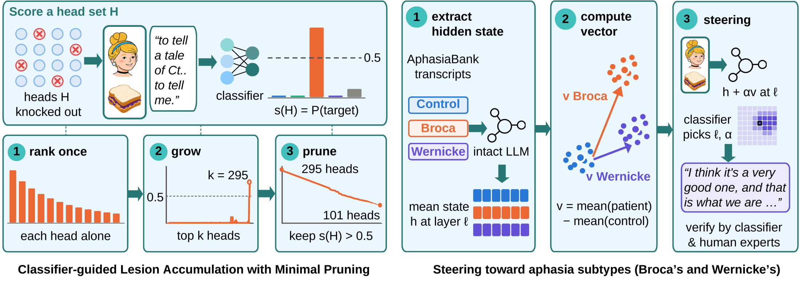
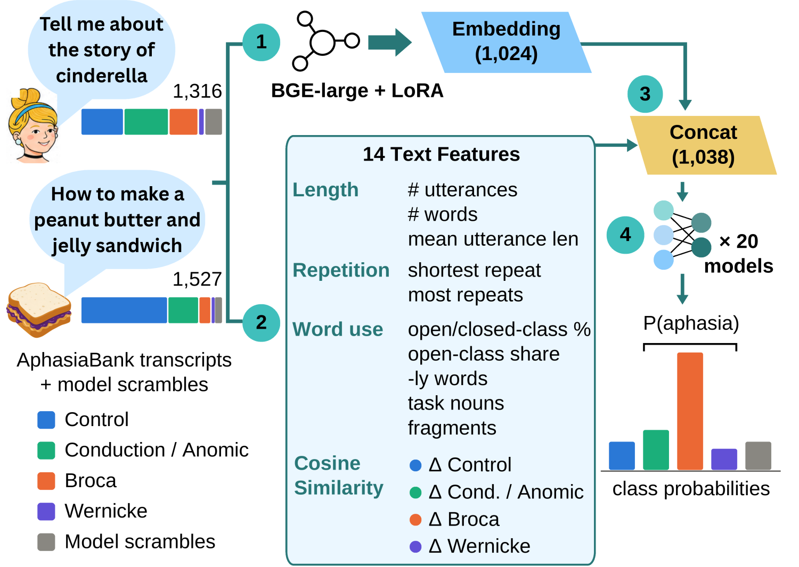
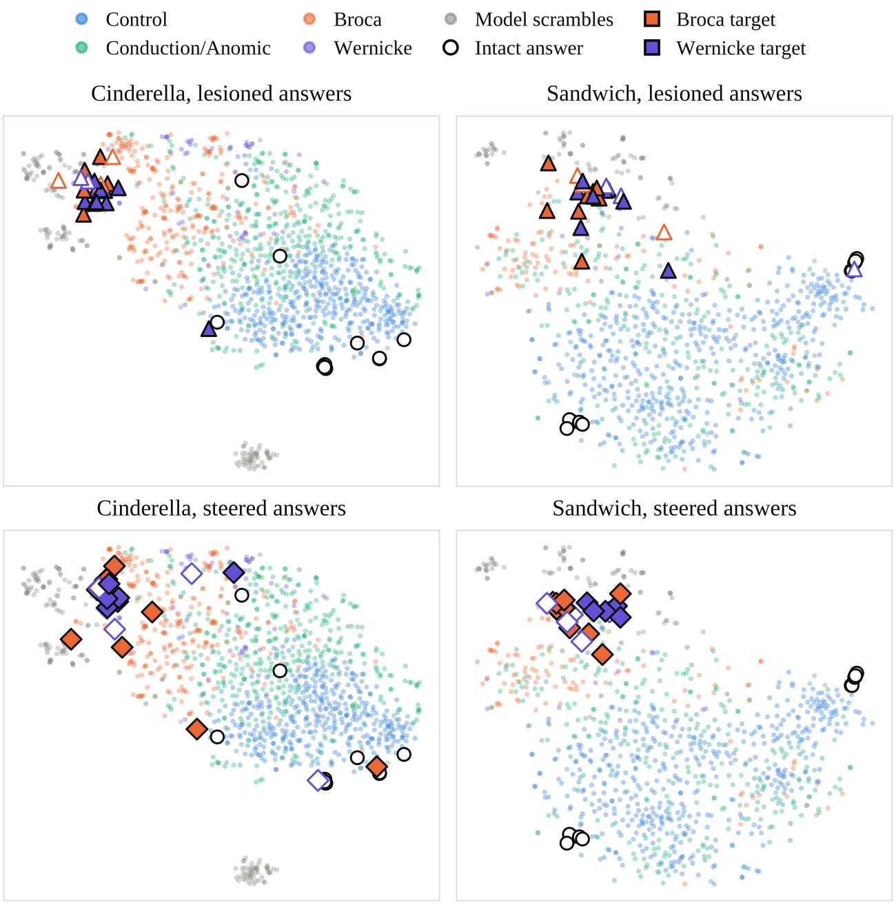

Language Impairment as a Lens
onto Large Language Models
Large language models spread language across highly distributed representations, yet a focal disruption can still break them — much as a localized brain injury causes aphasia in humans. We borrow the clinician's lens: we induce aphasia-like breakdowns in 11 LLMs in two complementary ways, knocking out attention heads and steering activations along directions computed from patients' speech, and diagnose every answer with a five-way clinical classifier.
Seen through this lens, a model's language turns out to be both separable and shared. Guided by the classifier, lesions isolate language functions to discrete sets of attention heads, and directions computed from patients' speech isolate them to continuous vectors in the residual stream: either intervention alone can make a model speak with a targeted type of aphasia, and the lesion search succeeds far more often when the clinical classifier, rather than corpus statistics, guides it.
Yet these functions are densely entangled. The heads whose loss yields Broca-like speech overlap with those behind Wernicke-like speech far more than chance would predict, and the two steering directions point nearly the same way, with only a small part of each setting one type apart. The two routes into the model also generalize asymmetrically: a steering direction carries its type to prompts it was never chosen on, whereas a lesion damages language broadly but leaves its type on the narrative where it was found.
Aphasia as a diagnostic lens on model failures
Neuropsychology mapped the brain's language system by watching how language breaks down after focal injury. Perplexity and accuracy only tell us that a model is degrading; aphasia's clinical taxonomy tells us how. Toggle between the two interventions below.
prompt Tell me as much of the story of Cinderella as you can.
Verbatim excerpts from Figure 1 of the paper; “…” marks omitted text.
Five classes, one of them for machines
Two interventions, one clinical yardstick
Both interventions act on a frozen model, and both are judged by the same classifier. Lesioning targets the model's structural “hardware”; steering targets its representational “software”.

-
1
A classifier that tells aphasia from machine failure
Prior lesion methods meant to induce aphasia instead produce model failures, which human experts identify as model scrambles. Our classifier tells the two apart: it combines a LoRA-tuned BGE-large encoder with 14 text features, averaged over 20 seeds, and is trained on AphasiaBank transcripts plus 259 labeled model scrambles.
\begin{aligned} P(\mathrm{aphasia}) = \; &P(\mathrm{Cond./Anomic}) \\ +\, &P(\mathrm{Broca}) + P(\mathrm{Wernicke}) \end{aligned}83.3% accuracy and 0.78 macro-F1 on held-out transcripts.
-
2
CLAMP: lesion the heads the classifier points to
Classifier-guided Lesion Accumulation with Minimal Pruning zeroes the outputs of attention heads at every position. It ranks heads by the score of each alone, grows the set in that order until the score exceeds 0.5, then prunes heads while it stays above.
\begin{aligned} s(H) &= P(\text{target} \mid H \text{ knocked out}) \\ s(H) &> 0.5 \end{aligned}In the final set, restoring any single head brings s(H) to 0.5 or below.
-
3
Steering: add a direction from patients' speech
The model reads every human transcript as if it were its own answer. A subtype vector is the mean residual stream of Broca (or Wernicke) transcripts minus that of control transcripts; adding it at one layer steers generation.
\mathbf{v}_\ell = \tfrac{1}{|T|}\textstyle\sum_{x\in T} h_\ell(x) - \tfrac{1}{|C|}\sum_{x\in C} h_\ell(x)A sweep over 8 layers and 8 strengths picks where and how hard to push.

The five-way classifier
It is trained on the AphasiaBank Cinderella and sandwich transcripts and on labeled model scrambles, using 14 text features and a text embedding, and is ensembled over 20 seeds.
We study 11 models from four families: GPT-2 XL; Llama-2-7B-chat and Llama-2-13B-chat; Pythia-1B, 1.4B, 2.8B and 6.9B; and Qwen3.5-0.8B, 2B, 4B and 9B. All of them answer the AphasiaBank prompts with greedy decoding.
Language functions isolate into circuits and vectors
Both interventions can induce a targeted aphasia type: through discrete sets of attention heads, and through continuous directions in the residual stream.
Classifier-guided search outperforms corpus-based search
Across 42 settings (seven models, two tasks, three targets), lesion methods guided by corpus statistics almost never produce a Broca- or Wernicke-like answer.
Lesioning heads under the classifier works best. CLAMP succeeds in 38 of 42 settings, against 25 for Param-C, which lesions parameters, and 23 for Head-CEM, whose more aggressive optimization leaves 12 of its 19 failures as model scrambles.
The heads of a lesion act together
Restoring the clean outputs of all of a lesion's heads while the model reads the prompt undoes 53 of the 54 lesions. Restoring a single head undoes the lesion for a median 83% of heads, yet the classifier labels 80% of those answers model scrambles and only 13% control speech.
A lesion that keeps the story
Knocking out 101 heads of Llama-2-13B-chat turns its fluent Cinderella story into to tell a tale of Ct.. to tell me.
with P(Broca) = 0.89, while the model still confirms that it knows the story.
Experts confirm the steered types
Two experts labeled the steered answers of seven models. Either expert identifies the targeted type for 58% of the Broca answers and 58% of the Wernicke answers, although steering toward Broca's aphasia often scrambles the model.
What the experts call the steered answers
Answers steered toward Broca's or Wernicke's aphasia, by target and prompt. Source task: the narrative whose answers chose the steering layer and strength; other prompts: the other narrative and the five connected-text prompts of the Text Aphasia Battery (TAB).
An answer counts as the target when either expert labels it so; any other answer is split evenly between its two experts' labels (Figure 5).
Aphasia types are densely entangled
Distinct aphasic profiles share their mechanisms: Broca and Wernicke lesions share many heads, and the Broca and Wernicke directions point nearly the same way.
Overlap begins at single heads
A head whose knockout makes the answer more Broca-like usually makes it more Wernicke-like too: the two single-head rankings correlate at a median Spearman ρ of 0.93.
Both lie along the aphasia direction
The Broca and Wernicke directions point nearly along each other (median cosines 0.79–0.90) and along the direction of all aphasic transcripts (0.97 for Broca, 0.92 for Wernicke).
A small part sets each type apart
The type-specific parts point away from each other (−0.65 to −0.41), and the Wernicke part alone pushes P(Wernicke) above 0.5 in all 22 model–task pairs.
Asymmetric generalization: steering carries its type, lesions do not
Almost every lesion found on one narrative also damages the model's language on new prompts, but the type it induces stays on that narrative. A steering direction carries its type to prompts it was never chosen on.
- 65% · 63%of Broca- and Wernicke-steered answers to new prompts that either expert labels with the targeted type (answers that are not model scrambles)
- 44 of 76Broca-steered answers to new prompts labeled Broca-like, against 13 of 77 Wernicke-steered ones
- 4 of 15TAB short-answer items the lesioned models get right (median), against 8.5 for the same models intact
- 50 of 54lesions in whose connected text the LLM judge finds more aphasia features than in the intact model's

In a text space that knows nothing of our labels
Placed among the human transcripts by a frozen sentence encoder, answers steered toward Broca's aphasia lie among Broca transcripts, which make up 57% and 43% of their nearest texts on the two tasks. Answers lesioned toward Broca's aphasia lie near the model scrambles, which make up 53% and 37% of theirs.
Intact answers: white circles; lesioned answers: triangles (top); steered answers: diamonds (bottom); a hollow marker does not reach its target (Figure 8).
Steering back undoes the lesions, but does not heal them
Removing a lesion's own direction from the residual stream after every block moves nearly every answer off its target, but almost always into model scrambles, and random directions do almost as well.
Undoing a lesion is easy, but unspecific
Removing the own direction undoes 53 of the 54 lesions, and the classifier labels 52 of these answers model scrambles and none of them control speech.
Removing one of three random directions undoes 50 or 51 of the lesions. Pushing with a random direction of the same norm at a single layer undoes the lesion in 91% of the pushes, against 95% for the lesion's own direction.
Nearly every perturbation we tried moves the answer off its target, mostly into model scrambles rather than back to control speech.
The classifier agrees with experts more often than an LLM judge
Across all steered answers, including those to out-of-distribution TAB prompts, the classifier matches either expert's label on 65% of answers, against 55% for a DeepSeek-V4.1-Flash judge.
Where the advantage comes from
Much of it comes from the 77 answers that the experts identified as model scrambles: the classifier agrees with either expert on 51 of them, the judge on 23.
The two experts agree with each other on 80% of the answers, with a pooled Cohen's κ of 0.76.
Labels from the classifier and the LLM judge are assistive signals, not clinical diagnoses.
What the impaired models say
Single greedy answers, verbatim (Tables 15 and 32 of the paper); a line break in an answer is shown as one.
LLMs, functionally analogous to biological brains, rely on a densely entangled architecture that can be systematically mapped through clinically informed interventions.